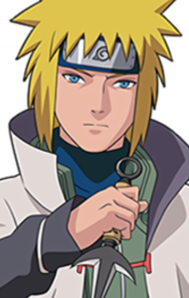

Minato Namikaze
Naruto
- Idade:24 anos
- Aniversário:25 de janeiro
- Altura:179 cm
- Peso:66 kg
- Cabelos:Loiros
- Olhos:Azuis
- Tipo sanguíneo:B
- Raça:Humano
Descrição:
Minato era bem calmo e altamente perspicaz. Mesmo durante momentos difíceis ele ainda era capaz de manter a compostura, avaliando a situação e elaborando planos de ação adequados, um processo que envolve frieza. Ele também tinha um lado brincalhão, como por exemplo nomear técnicas com nomes extremamente complicados antes de rapidamente desconsiderá-las. Ele parecia ser bem ciente de sua reputação, que inspirava terror em seus inimigos, mas apesar disso mostrou ser respeitoso com aqueles que viviam ao seu lado. Ele também não gostava de falar livremente sobre o passado dos outros, e foi dito ser uma pessoa muito descontraída e agradável.